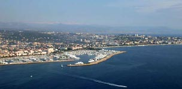
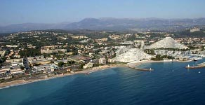
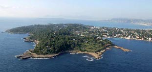
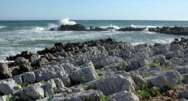

<!--<link href="../css/style.css" rel="stylesheet" type="text/css">-->
<link href="../css/style.css" rel="stylesheet" type="text/css" />
<meta http-equiv="Content-Type" content="text/html; charset=utf-8" />
<ion-view view-title="Accueil">
    <ion-content class="padding">
        <title>Les paysages - Le littoral</title>
<div class="list card">
          <p><b><span class="titre">Les paysages</span></b><span class="titre"> - Le littoral</span></p>
          <p class="police">La côte littorale s’identifi e par un paysage essentiellement urbain. L’urbanisation de la bande littorale de la Côte d’Azur donne l’impression de Mandelieu à Nice, d’une ville continue. La densité du front de mer n’est perturbée que de rares coupures. Seuls le Cap d’Antibes, le vallon de l’Aube à Vallauris et le parc de Vaugrenier font offi ce de coupure verte.<br />
            <br />
Le littoral de la Côte d’Azur off re aujourd’hui plusieurs images que l’on peut distinguer : les côtes rocheuses, les pins en bord de mer, les plages de sable ou de galets effi lées le long d’axes de transports etc.<br />
            <br />
Sur le front de mer, le gigantisme des aménagements est omniprésent. Les ports de plaisance se développent et s’agrandissent pour accueillir des bâteaux de plus en plus grands. Ces aménagements mettent la mer à distance.<br />
            <br />
Le Cap d’Antibes représente une entité à part, détachée de la ville littorale. Les grands jardins et villas historiques et leurs pins côtoient les anciens terrains horticoles sur lesquels s’est développée l’urbanisation résidentielle. La promenade est la pratique accessible au public majoritaire le long du Cap. La côte rocheuse est longée par le sentier des douaniers qui n’est pas assuré sur l’ensemble du linéaire. Le prolongement du chemin est envisagé pour assurer cette continuité.</p>
          <br />
          <div class="position_gauche_50"><br />
            <br />
          <span class="gras">Golfe-Juan</span></div>
          <div class="position_droite_50"><br />
            <br />
          <span class="gras">Front de mer - Villeuneuve-Loubet</span></div>
  <div class="position_gauche_50"><br />
    <br /> 
  <span class="gras">Cap d’Antibes</span></div>
  <div class="position_droite_50"><br />
    <br />
  <span class="gras">Côte rocheuse du Cap d’Antibes</span></div>
</div>
        </ion-content>
</ion-view>
        